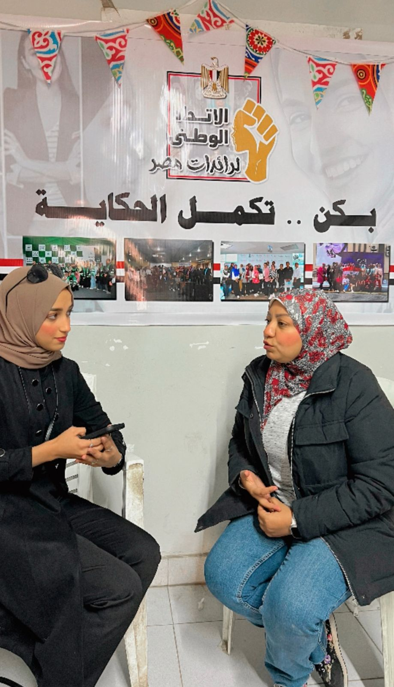
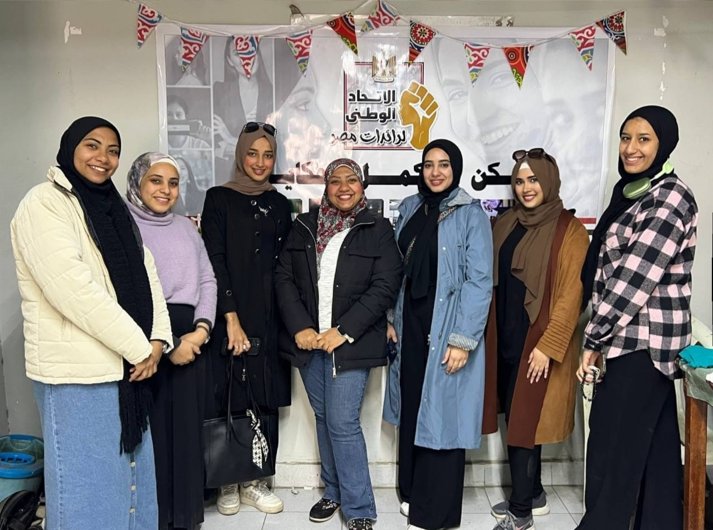

تمكين المرأة وتطوير الإعلام وتعزيز الشراكة.. أهم أهدافنا


فاديا كيوان في حوار مع "كيان": الأزمات تزيد هشاشة المجتمع وترسخ العنف ضد النساء
التحديات تختلف بين الدول
مشاركة المرأة حقيقية لكنها غير كافية
دور الإعلام محورى وهو سلاح ذو حدين
نقص التمويل أكبر تحدٍ نواجهه
إعداد- بسنت محمد وآمال عبد العاطي وطارق عيد
منظمة العمل العربية هي منظمة حكومية دولية، أنشئت تحت مظلة جامعة الدول العربية ومقرها في مصر. خرجت من إعلان القاهرة الصادر عن قمة المرأة العربية الأولى، التي انعقدت في القاهرة، نوفمبر 2000، وشارك في تنظيمها المجلس القومي للمرأة في مصر، ومؤسسة الحريري في لبنان، وجامعة الدول العربية، ودخلت حيز التنفيذ عام 2003.
وقامت المنظمة بهدف تمكين المرأة العربية، وبناء قدراتها لتعزيز تقدم المجتمعات العربية. وتعمل على زيادة الوعي بضرورة إشراك المرأة، كشريك متساوٍ في التنمية المجتمعية، وتنسيق الجهود العربية من أجل تعزيز تمكين المرأة ورفع الوعي بدورها الحيوي في المجتمع.
ولأنها منظمة عربية حكومية قوية ذات أهداف سامية، حرصنا على لقاء إحدى المسئولات بها، لتحدثنا عن المنظمة وهدفها ورسالتها، وما تقوم به من أجل المرأة العربية.. وكان اللقاء والحوار مع السيدة (فاديا كيوان).
كيف بدأتِ مسيرتكِ المهنية؟
أنا أستاذة جامعية في العلوم السياسية، درست الفلسفة وعلم النفس بجامعة السوربون، وعملت لفترة طويلة في المجال الأكاديمي. كما أسهمت في تأسيس معهد للعلوم السياسية، وأدرت مركزًا للأبحاث حول الوظيفة العامة والحكم الرشيد.
ما هي منظمة المرأة العربية؟
هي منظمة حكومية عربية تأسست عام 2003 بمبادرة من سيدات أوليات في دول عربية، لدعم قضايا المرأة على المستوى الإقليمي، وتعزيز تبادل الخبرات بين الدول الأعضاء، وهى تضم 14 دولة ناشطة وتسعى للتوسع مستقبلاً.
ما أهداف المنظمة؟
نعمل على تمكين المرأة سياسيًا واقتصاديًا، تطوير الثقافة والإعلام، وتعزيز الشراكة بين الجنسين، مع التركيز على وضع سياسات داعمة للمرأة.
كيف تواجه المرأة العربية التحديات اليوم؟
التحديات تختلف بين الدول، لكنها تشمل المعوقات الثقافية، النزاعات المسلحة، والأزمات الاقتصادية، التي تؤثر على فرص النساء في العمل والتعليم والحماية القانونية.
ما تأثير الأزمات الاقتصادية والسياسية على المرأة؟
الأزمات تزيد هشاشة المجتمع، وتؤدي إلى ارتفاع معدلات العنف ضد المرأة، وتراجع فرص العمل، خاصة مع غياب الاستقرار وضعف دور الدولة.
ما تأثير الأزمات الاقتصادية والسياسية على المرأة؟
الأزمات تزيد هشاشة المجتمع، وتؤدي إلى ارتفاع معدلات العنف ضد المرأة، وتراجع فرص العمل، خاصة مع غياب الاستقرار وضعف دور الدولة.